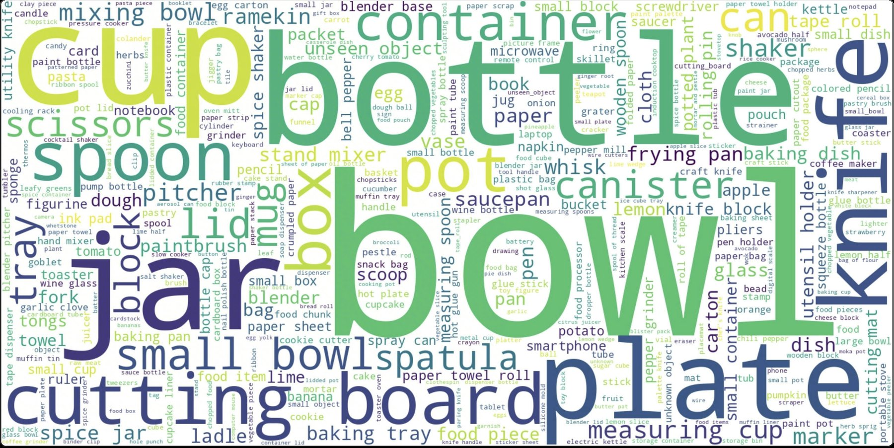
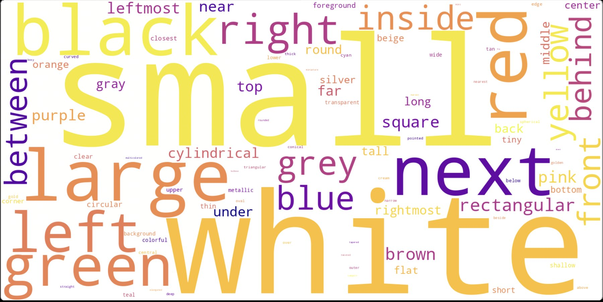
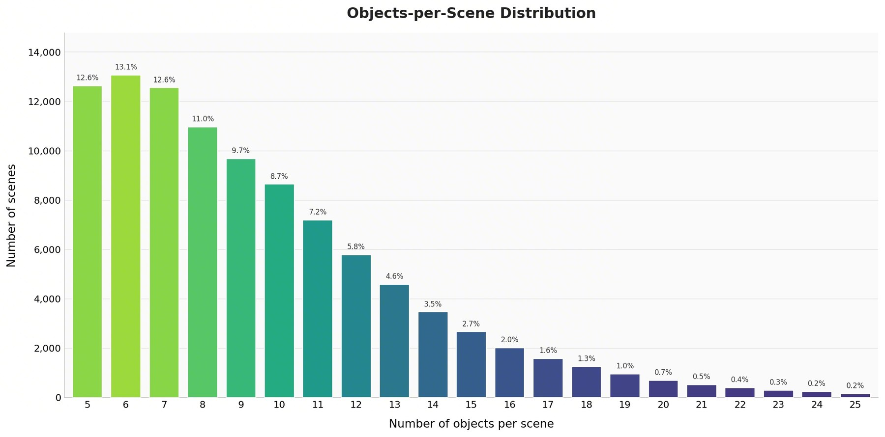
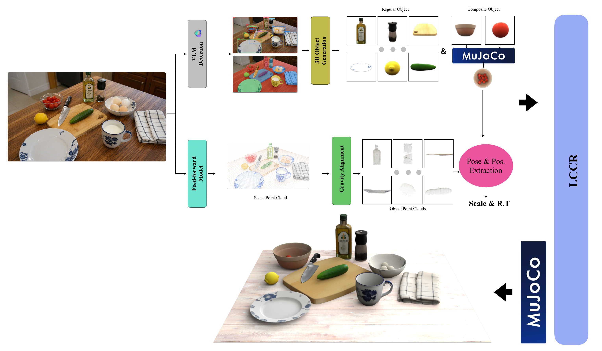
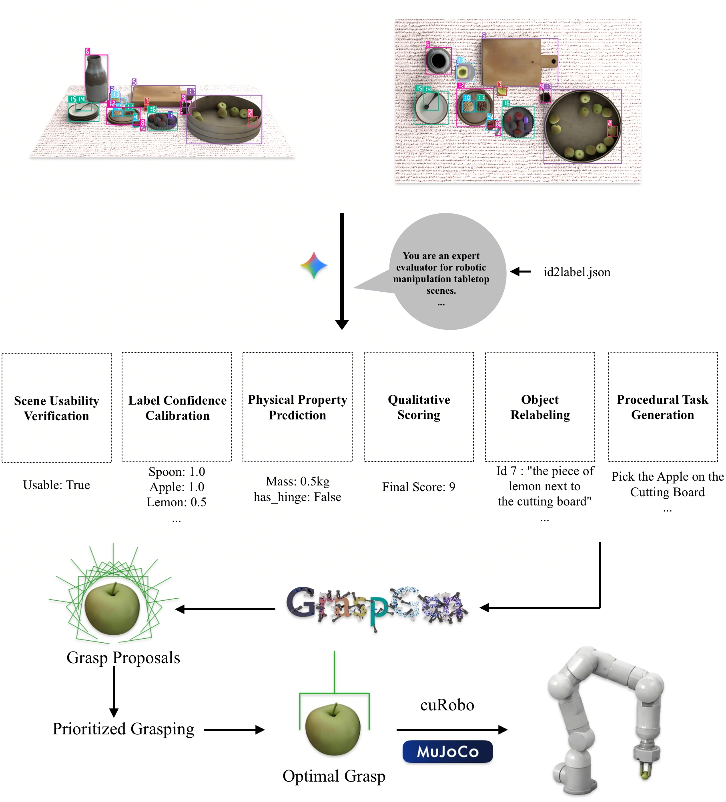

The development of generalizable robotic manipulation policies is inherently bounded by the availability of large-scale, high-fidelity scene data. While recent automated synthesis methods attempt to bridge this gap via text-to-layout hallucination or simplified procedural generation, they frequently suffer from physical implausibility and fail to capture the complex, dense clutter of actual human environments.
In this paper, we introduce TableVerse, a fully automated Real2Sim pipeline that shifts the paradigm from imaginative layout generation to deterministic reconstruction from unstructured, in-the-wild image data. Our framework seamlessly processes unscripted internet media into high-fidelity, simulation-ready tabletop environments with accurate metric scales, authentic topologies, and verified mechanical stability. Furthermore, an automated task-conditioned trajectory generation framework is integrated to synthesize high-quality, collision-free pick-and-place demonstrations.
Leveraging this complete pipeline, we construct the TableVerse-100K Dataset, a large-scale corpus comprising 100,000 unique, physically consistent environments paired with interactive manipulation trajectories. By capturing diverse asset compositions, realistic spatial distributions, and high-quality demonstrations, TableVerse-100K establishes a highly scalable and high-fidelity data foundation, providing significant value to facilitate future research in generalizable robotic manipulation tasks.
TableVerse-100K is grounded in real-world contexts. Browse a curated sample from each scene category — click any thumbnail to inspect it.



Demos. Generated Pick & Place rollouts in simulation across different reconstructed scenes.


Given an unscripted image of a real tabletop scene, our pipeline recovers metric geometry, instantiates simulation-ready assets, and verifies mechanical stability before producing task-conditioned manipulation demonstrations.
100 in-the-wild test scenes · 4 methods × 3 viewpoints in a single grid. Use the filmstrip below to switch scene, click any panel to enlarge, or press R for a random scene.
@article{wang2026tableverse,
title={TableVerse: A Large-scale Tabletop Dataset with Real-world Grounded Layouts for Generalizable Manipulation},
author={Wang, Boyuan and Zhang, Yue and Xue, Xutao and Song, Xueyu and Sun, Yu},
journal={arXiv preprint arXiv:2607.21017},
year={2026}
}